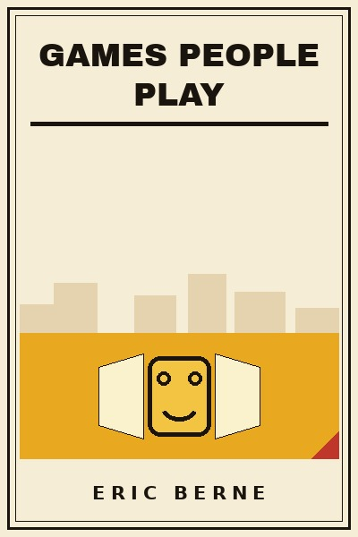

Library › Psychology & People
Games People Play - Summary & Key Lessons

The psychology of human relationships. We spend our whole lives playing games we do not know we are playing.
📖 OPEN THE FULL INTERACTIVE BREAKDOWN →🌐 Read it in Hindi, Hinglish, Gujarati, Tamil & 22 more languages - free, with audio.
💡 The Big Idea
Berne's transactional analysis splits every personality into three ego states: Parent (rules and shoulds), Adult (here-and-now reality) and Child (feelings and old adaptations). A transaction is complementary when both people talk from matching states, and crossed when they do not, and crossed transactions are where trouble starts. A game is a repeating series of transactions with a concealed motive and a predictable payoff: a bad feeling collected like a stamp, exchanged for a familiar outcome. Games keep relationships alive at the cost of intimacy, and the way out is the same every time: surface the hidden agenda, and speak Adult to Adult.
🧠 The 10 Key Lessons
Lesson 1: Parent, Adult, Child
Part 1: The Structure
Three ego states live in everyone: the Parent (inherited rules), the Adult (present-moment processing) and the Child (archived feelings and adaptations). Every sentence you speak comes from one of them, and every sentence lands in one.
📖 Example: The employee asked for data (Adult) and got a lecture about responsibility (Parent): the transaction crossed, and the conversation quietly died. Read the full example →
⚡ Do this: In your next three conversations, tag each exchange: which state spoke, and which state answered?
Lesson 2: Complementary and Crossed Transactions
Part 1: Transactional Analysis
Complementary transactions (Adult to Adult, Parent to Child by consent) can run forever; crossed ones, where the answer comes from an unexpected state, create the angular jolt that ends or derails conversation.
📖 Example: How do I file this expense? (Adult) answered with You never read the manual (Parent) crosses wires: the meeting turns into a fight about respect. Read the full example →
⚡ Do this: When a conversation jolts sideways, ask which state just answered, and re-ask your question, plainly, from Adult.
Lesson 3: What a Game Is
Part 2: The Games
A game is an ongoing series of complementary transactions with a concealed motive, leading to a well-defined predictable outcome: a collection of bad feelings, a familiar payoff. Games are how people get strokes while avoiding intimacy.
📖 Example: The marital quarrel that repeats monthly with the same script, same lines and same ending is not a failure of communication: it is a game working exactly as designed. Read the full example →
⚡ Do this: Name your most repeated argument with anyone. Write its payoff: what familiar feeling does it reliably deliver, and to whom?
Lesson 4: Why Don't You, Yes But
Part 2: The Games
The classic game: someone presents a problem, others offer solutions, each is rejected with Yes, but. The Player's Child needs sympathy, not solutions, and wins by proving no one can help.
📖 Example: The friend who has an answer for every suggestion, for years, is not stuck: she is winning her game, collecting proof that nothing works and care runs out. Read the full example →
⚡ Do this: Stop offering solutions to a Yes But player. Ask instead: what would it take for you to actually try one? Then be quiet.
Lesson 5: NIGYSOB: Now I've Got You
Part 2: The Games
The player waits, barely consciously, for someone to slip so they can unleash stored indignation: the slip is the excuse, the stored anger is the fuel. Institutions play it with rules; families with history.
📖 Example: The accountant who forgave a hundred real errors but exploded over a missing receipt was playing NIGYSOB with his whole office. Read the full example →
⚡ Do this: Notice your glee when someone slips. That flicker of satisfaction is the game announcing itself: name it before you speak.
Lesson 6: See What You Made Me Do
Part 2: The Games
The blamer's game: provoke or bungle, then pin the outcome on the other person, converting their guilt into a shield against accountability. The payoff is innocence on loan from someone else's account.
📖 Example: The manager who set an impossible deadline, missed it, and led the review with whose numbers were late made the team audit themselves instead of the plan. Read the full example →
⚡ Do this: Replace whose fault with what happened next time blame lands. Keep the sentence exactly that boring.
Lesson 7: Strokes: The Currency of Attention
Part 1: Strokes
People need strokes (units of recognition) like food. Where positive strokes are scarce, people will collect negative ones, any recognition beats none, which is why people pick fights and court punishment.
📖 Example: The boy who misbehaved for scoldings and the employee who courted fire drills were both starving: negative attention was the only kind on offer. Read the full example →
⚡ Do this: Give three specific positive strokes today, and notice where you settle for negative ones yourself.
Lesson 8: Life Scripts Written in Childhood
Part 3: Beyond Games
Each person writes a life script in childhood, a drama with a role (winner, loser, waiting), reinforced by parents and replayed on bigger stages. Games are script maintenance: they keep the story on track.
📖 Example: The third promotion that felt exactly like seventh grade, proving again she was the overlooked one, was script casting, not coincidence. Read the full example →
⚡ Do this: Write your recurring story in one sentence: this is the part where I always ___. Then ask who wrote it, and whether you would cast it again today.
Lesson 9: The Payoff Is Always a Feeling
Part 2: The Games
Every game ends in rackets, familiar bad feelings (hurt, guilt, rage, worry) that are secretly comfortable because they are old friends. The payoff is collected like coupons and redeemed for an old identity.
📖 Example: The worrier who felt calm only while worrying had turned anxiety into a hobby: the racket protected him from the strangeness of peace. Read the full example →
⚡ Do this: Identify your racket feeling, the one you land in fastest. Trace its first home. That age is where the game began.
Lesson 10: Game-Free: Intimacy as the Alternative
Part 4: The Way Out
Berne's alternative to games is intimacy: game-free relating between Adults, with awareness, spontaneity and honesty. It is rare because it risks real outcomes, no script protects you from being known.
📖 Example: Two colleagues who dropped their roles and spoke plainly, I am scared about this launch, and you?, had the first meeting in months without a subtext. Read the full example →
⚡ Do this: Pick one relationship this week and have one conversation with zero agenda, zero blame, zero management of impressions. Notice the aftertaste.
✅ 5-Step Action Plan
- Tag ego states in your next three conversations; re-ask from Adult when crossed.
- Name your most repeated argument and its payoff feeling.
- Have one game-free conversation this week: no agenda, no blame, no performance.
⚠️ When This Doesn't Work
Written 1964 with vintage case stylings; later transactional-analysis practice softened the taxonomy, and modern attachment research adds depth Berne lacked. The ego-state lens remains a sharp daily tool.
💀 The Graveyard Proves It
📷 Cambridge Analytica - Harvested 87 Million Friends of Friends. Burn: The company, and Facebook's $5B fine. Read the full case study →
💬 Best Quotes from Games People Play
- “The game of Life is played with scripts written in childhood.”
- “Spontaneity means liberation from the compulsion to play games.”
- “Intimacy means game-free relating, and few people dare it.”
Interactive version: mark lessons as read, listen in your language, share quote cards.